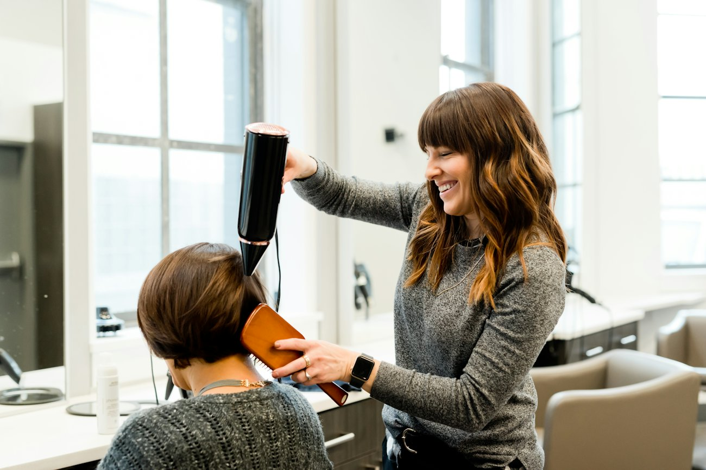
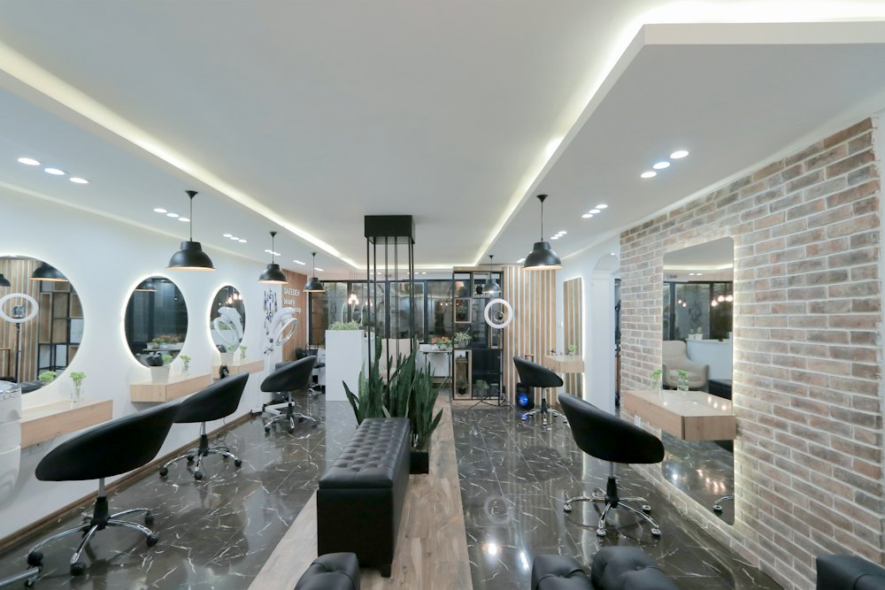
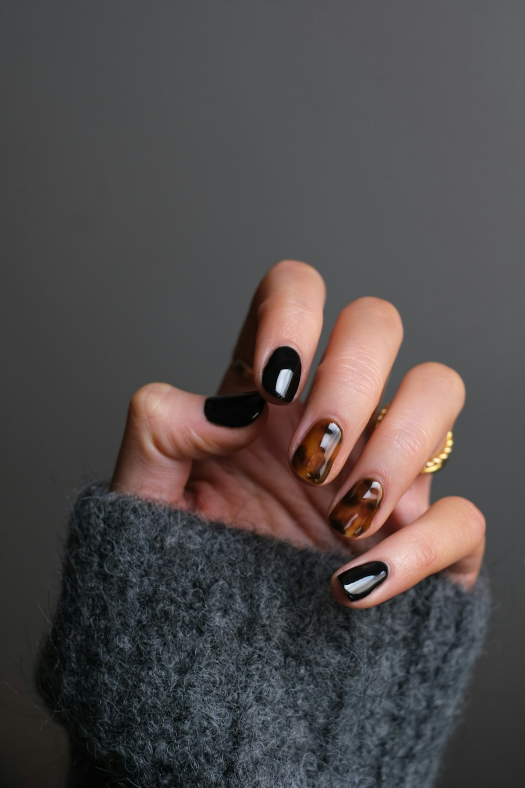
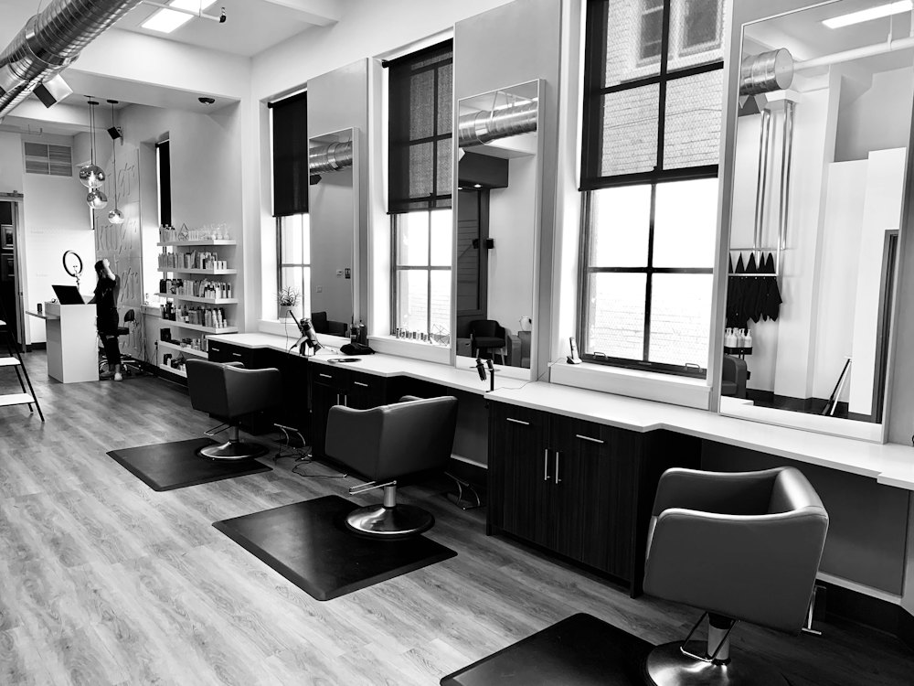
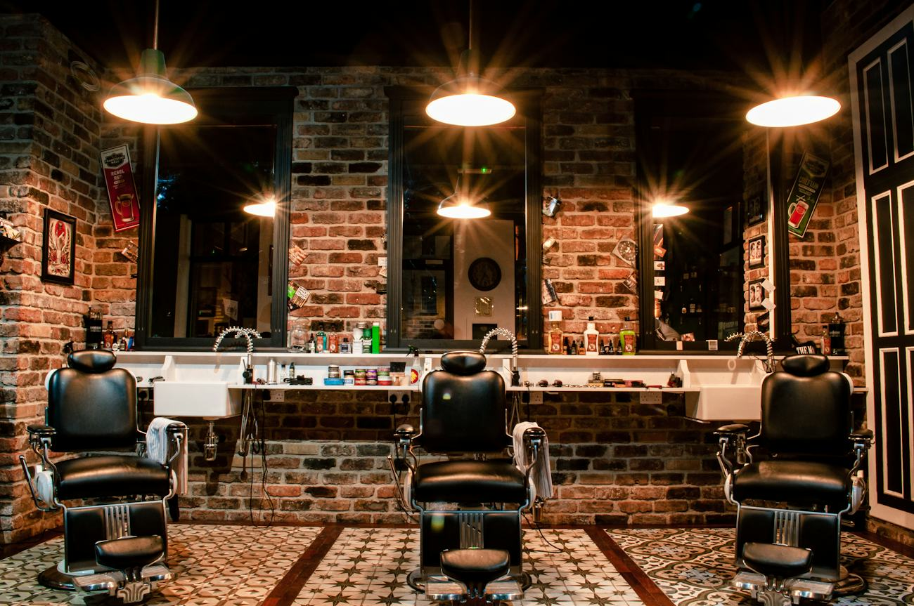

001
Corte
Corte y peinado
Un corte pensado para ti y tu día a día, con un acabado que dura.
Reservar este servicio →Peluquería y belleza con calma, detalle y trato cercano.
★ 4,8 · +92 opiniones en Google

Un corte pensado para ti y tu día a día, con un acabado que dura.
Reservar este servicio →Color, mechas y balayage con técnicas actuales y un resultado natural.
Reservar este servicio →
Tratamientos que devuelven al pelo su suavidad, su brillo y su fuerza.
Reservar este servicio →
Peinados para bodas, eventos y días que quieres recordar.
Reservar este servicio →Manos y pies cuidados, con esmalte clásico o semipermanente.
Reservar este servicio →Tratamientos faciales para limpiar, cuidar y dar luz a tu piel.
Reservar este servicio →4,8
+92 opiniones en Google
Rellena estos datos y te abrimos WhatsApp con el mensaje listo. Solo tienes que enviarlo.




Aquí vienes a cuidarte sin prisas. Te escuchamos, te aconsejamos y trabajamos con calma, atentas a cada detalle.
Queremos que salgas sintiéndote tú, solo que un poco mejor.
C. de Julián Berrendero, 3
28750 San Agustín del Guadalix, Madrid
| Lunes a viernes | 10:00–19:00 |
| Sábados | 10:00–14:00 |
| Domingos | Cerrado |